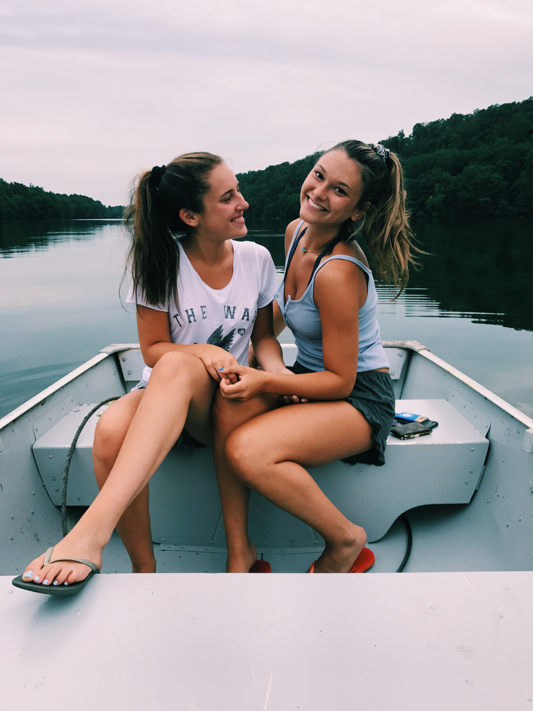

About Me
My name is Nicole Hirsch and I am currently a Junior at the University of Michigan. I am in the School of Information where I am on the Information Analysis pathway. My studies focus on the intersection of information, technology, people, and business. Also, I am involved in clubs on campus. I am passionate about being apart of Lean in: Women in Business, where the main goal is for women to embrace their potential in the workforce.
My Hometown
I am from Armonk, NY and have grown up in the town all of my life. My friends and I loved to explore our small little town. We would go to the lake and take boats out and just have a relaxing and fun time all together.
I went to Byram Hills High School before I went on to further my academic career at the University of Michigan. While I was in high school, I was on the golf team and involved in leadership clubs.